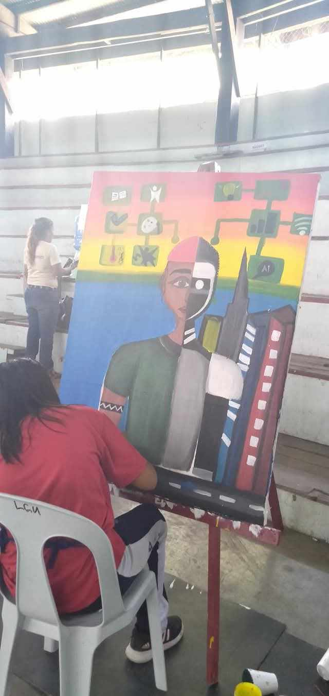
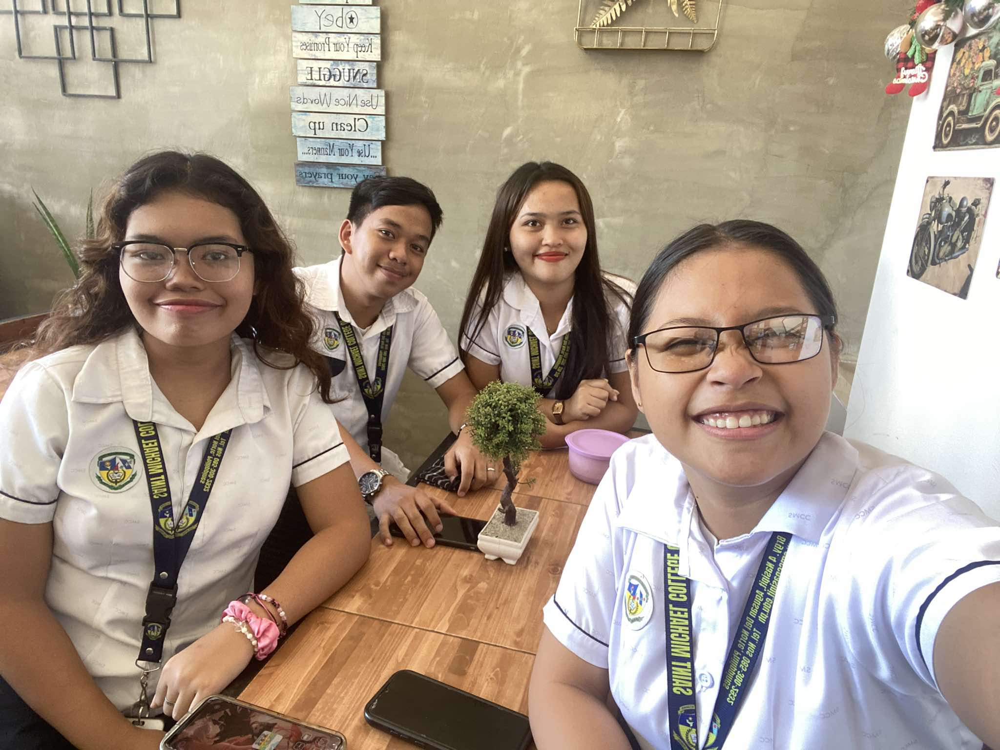
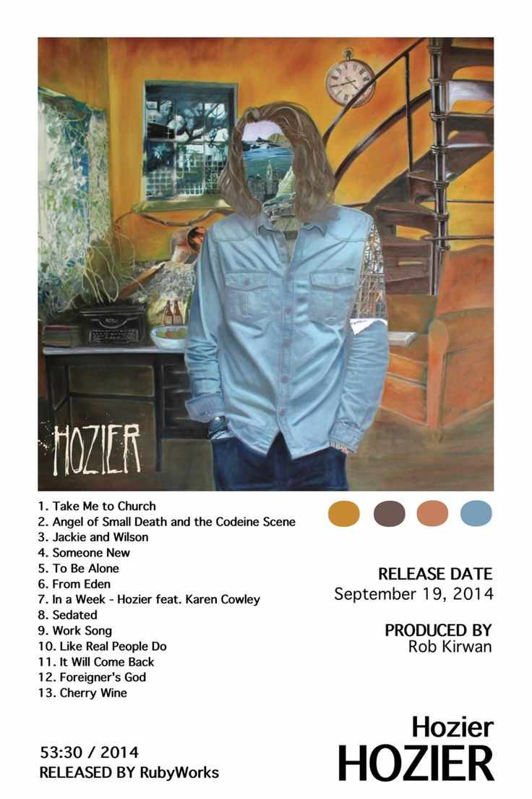
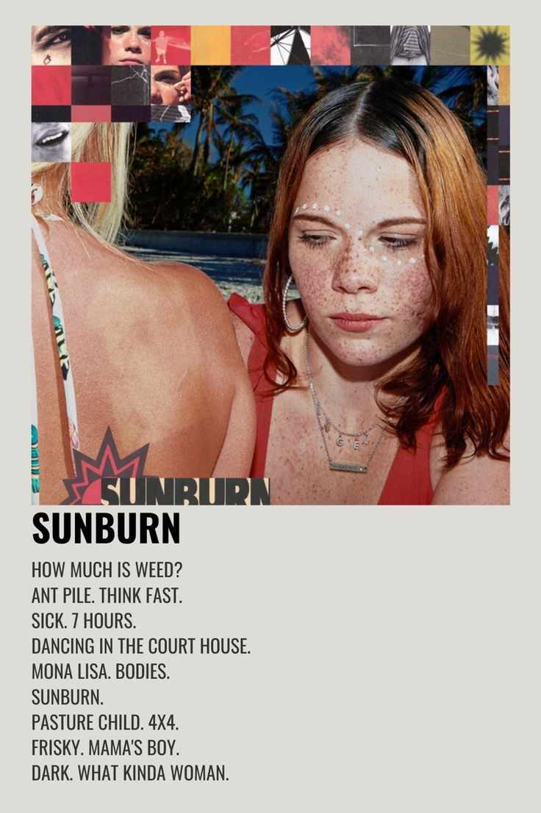

Hi! I'm Bea Mangornong, a 19-year-old BSIT 2 student studying at Saint Michael College of Caraga. I was born on February 4, 2005, and I currently live in Buenavista, Agusan del Norte. My life is simple, just living in the moment and constantly seeking growth and development in both my academic and artistic pursuits.
My MBTI is INTP, which means I pretty much love learning and challenging myself intellectually. I am always seeking out new opportunities to expand my knowledge and skills in the field of technology. I'm also a visual illustrator; I love creating and using my creativity to bring ideas to life.
Life Story
Childhood Experiences
I enjoyed my childhood days spent together with my cousin. Wherein I grew up in a peaceful environment surrounded by nature, which greatly influenced my love for art and technology. I used to be fascinated by any interesting stuff that I could get my hands on.
Teenage Experiences

In my teenage years, I started to explore my interests in art. I've always been drawn to the intersection of creativity and innovation. This passion has fueled my desire to continue learning and growing in both fields, allowing me to develop a unique perspective that I hope to share with others through my work.
Adult Experiences
Now that I'm approaching adulthood, I realize a lot of things from my experiences in my life journey. I met new friends, discovered new hobbies, and experienced new environments, challenges, and opportunities that have all contributed to shaping me into the person I am today. I am excited to see where my journey will take me next and how I can continue to use my skills and creativity to make a positive impact on the world around me.
My Hobbies
Indoor Activities
I enjoy all forms of creation, such as drawing and painting. In addition, I enjoy reading books and watching movies or series. On top of that, I enjoy learning new things and expanding my knowledge in a variety of fields. I believe that ongoing learning and discovery are critical to personal growth and development. I am constantly looking for new ways to challenge myself and push beyond my comfort zone.
Outdoor Experiences

When it comes to outdoor activities, I love hanging out with my friends to eat in our favorite spots while also creating lasting memories with those I care about.
My Favorite Stuff
Food
When it comes to food, I enjoy eating fried chicken and ramen because these are comfort foods. I also enjoy spicy foods since they give my meals an extra kick and keep things interesting. Trying new recipes and flavors is always an enjoyable and tasty adventure for me.
Music


In terms of music, I have a varied taste, but I primarily listen to pop punk and indie tunes. My current favorite musicians and songs are Hozier's Too Sweet, Dominic Fike's Three Nights, and Tyler the Creator's Darling I. I believe that music is a wonderful way to express feelings and connect with others. I enjoy going to concerts and discovering new bands to add to my playlist.
My Friends
My 4Lifers
My homegirl, my bestie for life <3
Artists Friends
My circle of friends of 8, I love these creative people and I miss them so much^^